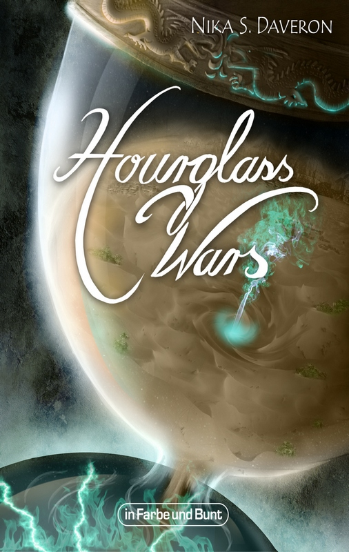

© in Farbe und Bunt Verlag
Nika S. Daveron wurde 1985 in Köln geboren. Die Pferdenärrin entdeckte bereits als Kind ihre Liebe zum geschriebenen Wort und eiferte früh ihren Autorenvorbildern nach, indem sie die Handlung ihrer liebsten Bücher weiter erzählte. Mittlerweile veröffentlicht sie eigene Geschichten bei verschiedenen Verlagen und baut darin Welten, deren Komplexität und Schönheit andere zum Weitererzählen animieren.
»Einst verbannten die Götter alles Böse in die Schattenwelt und gaben den Menschen die Chance, Frieden zu schließen und sich des Lebens in der Oberwelt als würdig zu erweisen. Doch auch 998 Jahre später erschüttern noch heftige Kriege die Länder. Egoistisch versucht jeder Herrscher, das Beste für sich herauszuholen. Doch was kaum jemand weiß: Die Zeit läuft langsam ab, denn die Götter setzten den Menschen damals eine Frist. Herrscht auch nach tausend Jahren keine Einigkeit, werden sich Oberwelt und Schattenwelt umkehren.«
Der Roman ist ca. 310 Seiten lang (E-Book, vom Gerät abhängig) und bereits vorzubestellen.
Titel: Hourglass Wars
Autor: Nika S. Daveron
Preis E-Book: 8,99 EUR (E-Book)
Erscheinungstermin: 11. Mai 2015 (E-Book)
Seitenzahl: ca. 310
ISBN E-Book: 978-3-941864-56-6
Genre: High-Fantasy
Dies beendet die Neuvorstellungen für diesen Monat mit drei fantasievollen Romanen, die im Regal eines jeden Phantastik-Liebhabers mehr als nur gut aufgehoben sind. Bis zum nächsten Mal und nicht vergessen – Go Team!